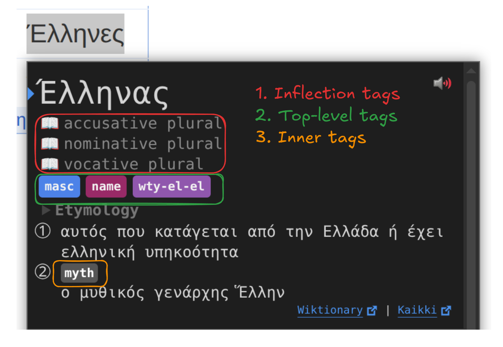

Tags
The mental model for tag extraction is as follows:
Wiktionary
│
│ (wiktextract)
│
├─> raw_tags
│ ↓ ↓
└─> tags / topics
↓
tag processing (which tags to keep, their short forms etc.)
↓
tag sorting (only for inflection tags)
↓
tag formatting (global css)
↓
(optional, custom css in yomitan)
↓
shown tag in yomitan
Overview¶
Wiktextract extracts three types of tags:
raw_tags: original language tags as they appear on Wiktionary (e.g. αρσενικό)tags: normalized, English-translated tags (e.g. masculine)topics: normalized, English-translated tags (e.g. Music), concerning general activities.
raw_tags are converted to tags and topics by wiktextract. We don't use the raw_tags directly, because they basically can be anything, including wiktionary editors mistakes. Working only with tags is the more reliable choice.
Wiktextract tags and topics can end up in multiple parts of a main dictionary entry:

Even though topics happen almost exclusively as inner tags, a wiktextract tag can be used as any of the three.
CSS¶
TODO: should this be in the css page?
Here is a basic example on how to handle these tags with your custom css.
/* Hide inflections (~book icon, inflection tags) */
.inflection-rule-chains { display: none !important; }
/* Hide dictionary name (top-level tag) */
[data-category="dictionary"] { display: none !important; }
/* Hide gender tags (top-level tag) */
[data-category="gender"] { display: none !important; }
/* Hide inner topic tags (note the -sc-) */
[data-sc-category="topic"] { display: none !important; }
Tag order¶
In the main dictionary, tag order depends on its type:
- Inflection tags: we sort them ourselves when building the dictionary, using
assets/tag_order.json. While this file has categories (formatility, cases etc.), those are later strip and serve only as visual help. The sorting is done with the flattened list. Tag postprocessing is only done for forms after building the whole intermediate representation, to only sort once with every extracted tag. The relevant function issrc/dict/main.rs::postprocess_forms. They appear in the order they are in the dictionary. - Top-level tags: are sorted by yomitan based on
sortingOrderof thetag_bank_term_1.jsonshipped with the dictionary. They may NOT appear in the order they are in the dictionary. - Inner tags: they appear in the order they are in the dictionary.
Tag processing¶
Tag processing is ruled by assets/tag_bank_term.json. The items of this JSON list are a custom version of:
type TagInformation = [
tagName: string,
category: string,
sortingOrder: number,
notes: string,
popularityScore: number,
];
where notes is replaced with either a string, or a list of strings representing aliases, the first one being shown when hovering the tag.
For example, this tag information:
[
"abbv",
"",
0,
[
"abbreviation",
"abbrev"
],
0
]
will convert both the wiktextract tags abbreviation and abbrev into abbv, and show abbreviation when hovered in yomitan.
Here is an example of a simple commit to add the "Buddhism" tag, that modifies the JSON, then runs the build script to update the rust code. Other example adding multiple tags here.
Run the build script after any modification to update the rust code: either just build or python3 scripts/build.py
Debugging¶
These are some steps to debug why a Wiktionary tag may not appear in yomitan:
- Is the Wiktionary tag really a tag? Sometimes badly formatted text, or a wrong template may look like a tag but it is not.
- Is the Wiktionary tag being extracted by wiktextract? Check the Kaikki link on the popup bottom-left to confirm.
- Is the Wiktionary tag being extracted as a
raw_tag? If it doesn't, see this issue, and the associated PR in wiktextract to have a grasp on how to request/add translations. - The tag is in wiktextract, but not in the dictionary? Check if the tag is whitelisted in
assets/tag_bank_term.json. - The tag is whitelisted, but not in the dictionary? Finally our problem, please open an issue.